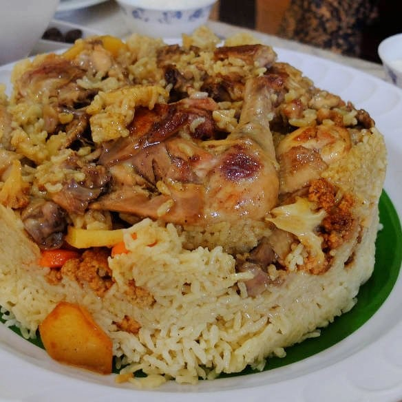
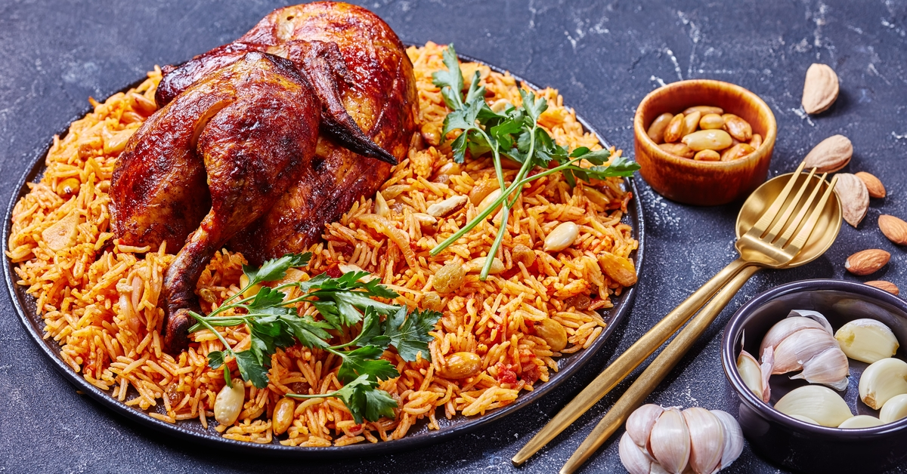
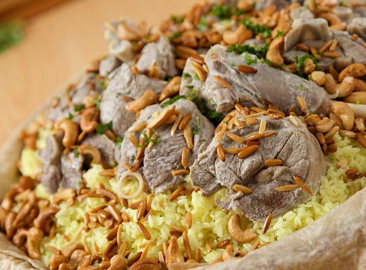

Home
about
Contact Us
Menu
Orders
Wish-list
Login
register
اكلات مفضلة
- المقلوبة
المقلوبة هي طبق رئيسي من الأطباق العربية الشعبية، من المطبخ الشامي والعراقي، يتكوّن من أرز مع خضار مقلية متنوعة، من ضمنها الباذنجان أو القرنبيط أو البطاطا أو الفول الأخضر، وقد يستخدم مزيج من هذه الخضروات، ويوضع معها اللحم كلحم الضأن أو الدجاج.

- كبسة
الكَبْسَة أو المَكْبُوس أو المجبوس أو المُطبق هي وجبة من الوجبات التي تتكون أساساً من الأرز طويل الحبة والتي تقدم في دول الخليج العربي، وتعد هي الوجبة الرئيسية في السعودية والكويت، وغالبًا ما تكون الكبسة مطهوة مع لحم الضأن أو الماعز أو مع الدجاج، ويوضع معها اللحم والسمن والمكسرات والزبيب،

- منسف
المنسف هو ثريد لحم الضان ولبن وخبز القمح البلدي أو الأرز. وهو أشهر وجبات الأردن، وتمتد لتشمل منطقة بادية الشام الواقعة بين العراق والأردن وجنوب سوريا وشمال السعودية، ويعتبر الأردنيون الأشهر بإعداده، فهو الطبق الوطني في الأردن، فيطبخ بالأعراس والأتراح ومختلف المناسبات
